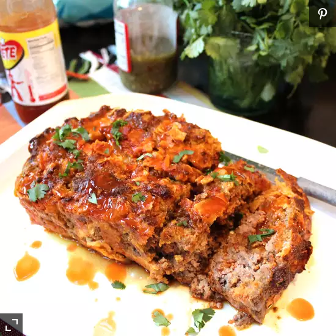

Mexican Taco Meatloaf

Description
I made some modifications to the recipe because I like my food spicy. I added some adobe seasoning,
salsa and jalepenos to the mix. I made a glaze using salsa and ketchup to put on top of the meatloaf. The
meatloaf was absolutely delicious.
The cheese is a good binder and adds just enough flavor to complement the meat. I will definitely make this dish
again.
Ingredients
- 1½ pounds lean ground beef
- 1 cup crushed tortilla chips
- ¾ cup shredded pepper Jack cheese
- 1 small onion, chopped
- 1 (1 ounce) packet taco seasoning mix
- 2 eggs, beaten
- ½ cup milk
- ¼ cup mild red taco sauce, or more to taste
Steps:
- Preheat the oven to 350 degrees F (175 degrees C).
- Thoroughly combine beef, tortilla chips, pepper Jack cheese, onion, and taco seasoning in a bowl.
- Whisk eggs, milk, and taco sauce together in a separate bowl. Add to meat mixture and stir until well
combined.
- Press mixture into a 9x5-inch loaf pan and top with a strip of taco sauce down the center.
- Bake in the preheated oven until cooked through and browned on top, 45 to 60 minutes.